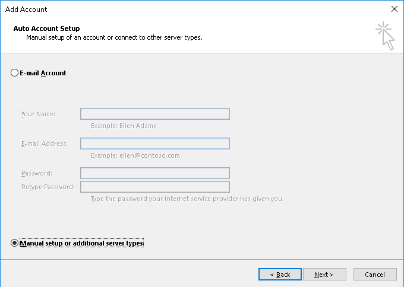
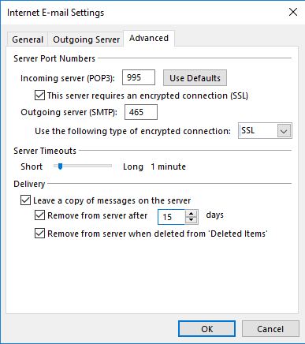
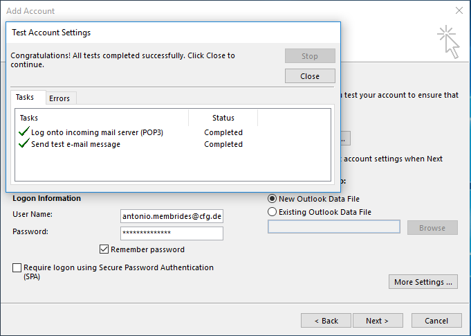

-

Este tutorial les describe paso a paso las configuraciones necesarias para poder enviar y recibir correos a través del cliente de correo Microsoft Outlook, el cual viene incluido en el paquete de Microsoft Office.
-

Deben seleccionar la configuración manual, por tanto, se debe dar clic en el radiobuton (botón en forma circular con un puntico en el medio) de abajo tal y como se muestra en la pantalla. [Manual setup or additional server Types]
-

Deben seleccionar el segundo radiobuton, especificándose los protocolos POP o IMAP.
-

En la casilla denominada Email Address o Dirección de correo deben poner su usuario incluyendo el dominio (@cfg.desoft.cu)
De igual forma lo deben repetir en Username o Nombre de usuario.
Es muy importante establecer bien los servidores de correo saliente y entrantes: correo.cfg.desoft.cu
-

De clic izquierdo sobre el botón denominado [More Settings …] para modificar los puertos establecidos para la comunicación.
-

Los puertos establecidos en nuestros servidores son: para el POP3 el 995, para el SMTP el 465, así como la encriptación se realiza mediante el SSL.
-

Una vez que se da clic en el botón [Next] o [Siguiente] debe salir una ventana de confirmación como esta. Se debe dar clic en el boton [Yes] o [Si] para continuar.
-

Si todo ha salido bien se muestran unas viñetas verdes, de lo contrario regrese desde el principio y verifique que no haya dejado pasar por alto nada de lo explicado anteriormente.
-

En caso de necesitar crear otra cuenta de usuario se debe dar clic izquierdo sobre el botón [Add another account] o [Adicionar otra cuenta], generalmente esta opción se omite y se da clic sobre el botón [Finish] o [Finalizar]
-

Una vez concluido todo este proceso se debe mostrar el listado de todos nuestros correos o al menos uno de Microsoft Outlook de prueba.